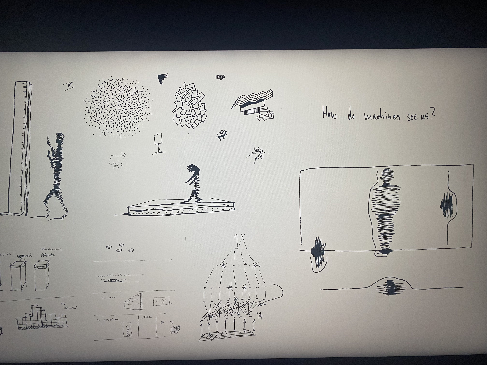
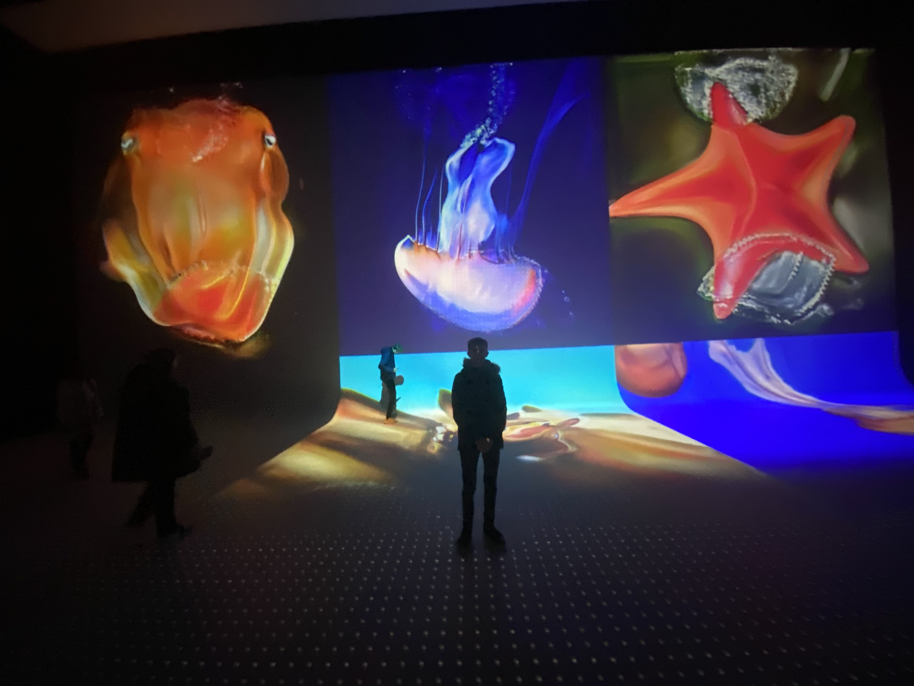

From September 27 you can view the work of the post-digital art group Random International in Nxt Museum.
The exhibition features newly completed works and others never before seen in Europe and follows the creative process of the artists,
from 2006 to today.
Curated by Bogomir Doringer, the exhibition highlights the craftsmanship within and the contextual backgrounds of an overview of their work.
Founded in 2005, Random International is a post-digital arts group that explores the impact of technological development on the human condition.
Best known for their large-scale interactive installations, the group works in a range of media,
including sculpture, light, kinetics, video, print and sound. Led by founders Hannes Koch (b. 1975, Germany) and Florian Ortkrass (b. 1975, Germany),
the group has a studio in London and consists of a global team of complementary talent.

Dimensional Shaping
Dimensional Sampling is an audiovisual installation by artist and programmer Yuxi Cao (James) in collaboration with sound artist Lau Hiu Kong (Lawrence).
The work explores the global rise of QR codes,
such as in China where the codes are fully integrated into daily life.
From purchasing products to identifying seniors, even the life stories of the deceased on tombstones use QR codes.

Yuxi Cao works on interdisciplinary projects that are at the intersection of sound visualization,
programming and computer science.
His innovative approach to art making has enabled Yuxi Cao to launch numerous design projects worldwide,
ranging from spatial designs to media art installations and art in public spaces.
In Dimensional Sampling you listen to the soundtrack of Lau Hiu Kong (Lawrence),
musician, performer and sound designer based in Hong Kong.
Lawrence enjoys exploring different disciplines in art.
His music ranges from numerous chamber ensembles, orchestras, Chinese instruments, live electronics to live audiovisual works.